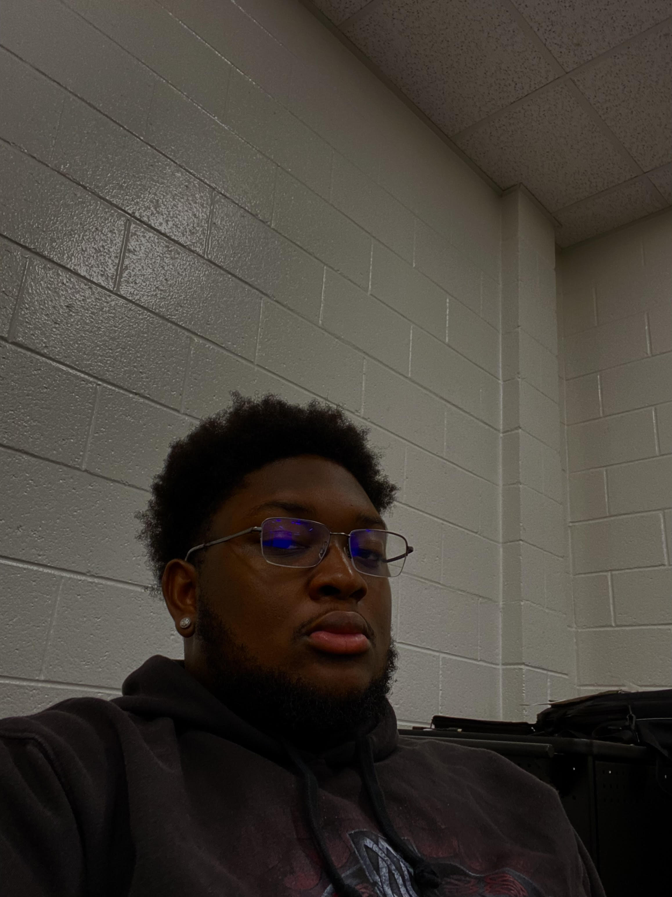

I am a Computer Programmer, Web Developer, and Graphic Designer. I am currently learning HTML, PHP, CSS, Java Programming, Visual Basics, C++, and MYSQL. I enjoy Web Development the most. I feel like it goes hand in hand with my Creativeness when doing Graphic Design.I started my first 2 years of college at Southern Crescent Technical College where I received my Associate In Computer Programming. I am now going to Mercer University majoring in Software Application Developement and Human-Computer Interaction.